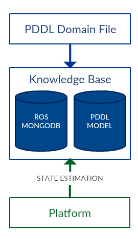

Using the Knowledge Base
The Knowledge Base Node stores the PDDL model. It can be queried for information on the PDDL domain model, and problem instance. It should be updated by state estimation.
It is not intended to store information outside of the PDDL model. For this, it is recommended to use mongodb_store
Contents:
- The Knowledge message
- Fetching domain details
- Fetching the problem instance
- Adding to the knowledge base
- Querying the knowledge base
The knowledge message
The KnowledgeItem message is used to represent a grounded object instance, proposition, or function.
Message: rosplan_knowledge_msgs/KnowlegeItem
{% highlight python linenos=table %} uint8 INSTANCE=0 uint8 FACT=1 uint8 FUNCTION=2 uint8 knowledge_type string instance_type string instance_name string attribute_name diagnostic_msgs/KeyValue[] values string key string value float64 function_value bool is_negative {% endhighlight %}knowledge_type
Identifies which kind of knowledge is represented by the message.
instance_type
The PDDL type of the object instance. Empty if the knowledge_type is not INSTANCE.
instance_name
The instance name of the object instance. Empty if the knowledge_type is not INSTANCE.
attribute_name
The name of the grounded PDDL formula: either a proposition or function. Empty if the knowledge_type is not FACT or FUNCTION.
values
The labeled list of parameters of the PDDL formula. Key values are the parameter labels of the ungrounded predicate. The values are the bound parameters. Empty if the knowledge_type is not FACT or FUNCTION.
function_value
The numeric value of the function. Value is 0 if the knowledge_type is not FUNCTION.
is_negative
If true, then the message represents a negative conditions. This is required to support domains with negative preconditions; and in contingent planning to disambiguate between unknown and false knowledge.
Fetching domain details
The domain is read from file, specified by parameter in the launch file described in launching the knowledge base. There are six services used for fetching domain information:
- get_domain_types
- get_domain_predicates
- get_domain_functions
- get_domain_operators
- get_domain_predicate_details
- get_domain_operator_details
These are described here: fetching domain details.
Fetching the problem instance
The Knowledge Base stores the current PDDL problem instance as object instances, propositions, functions, and goals. These values can be fetched using three services:
- get_current_goals
- get_current_instances
- get_current_knowledge
These are described here: fetching problem instance.
Adding to the knowledge base
In order for the Knowledge Base to remain current, it must be updated. There are three services for doing this:
- update_knowledge_base
- update_knowledge_base_array
- clear_knowledge_base
These are described here: adding to the knowledge base.
Querying the knowledge base
Topic: /kcl_rosplan/get_domain_types
Message: rosplan_knowledge_msgs/GetDomainTypeService
Given a list of knowledge items, the Knowledge Base returns true if and only if all of the propositions in the list are true in the current state, and if the functions have a value.
If false, then the service also returns a list of false knowledge, containing the propositions which were not true in the current state, and the functions without a value.